UNIVERSAL WAITE TAROT · QUICK REFERENCE
78장 핵심 해석 요약표
카드의 핵심 키워드와 한 줄 해석을 한눈에
메이저 22장 · 마이너 56장78장의 카드
일치하는 카드가 없습니다. 다른 이름이나 키워드로 검색해 주세요.
메이저 아르카나 22장
삶의 큰 흐름과 전환점
| 카드 | 핵심 키워드 · 간단 해석 |
|---|---|
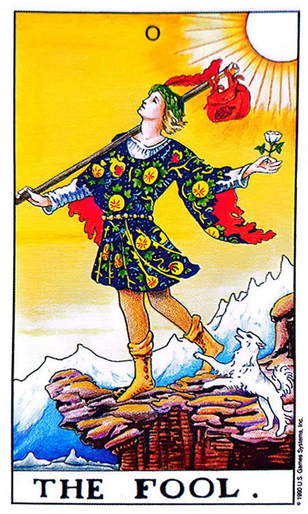 0. 바보THE FOOL | 시작 · 자유 · 가능성 새로운 세계에 도전하되, 주위를 돌아볼 필요가 있다. |
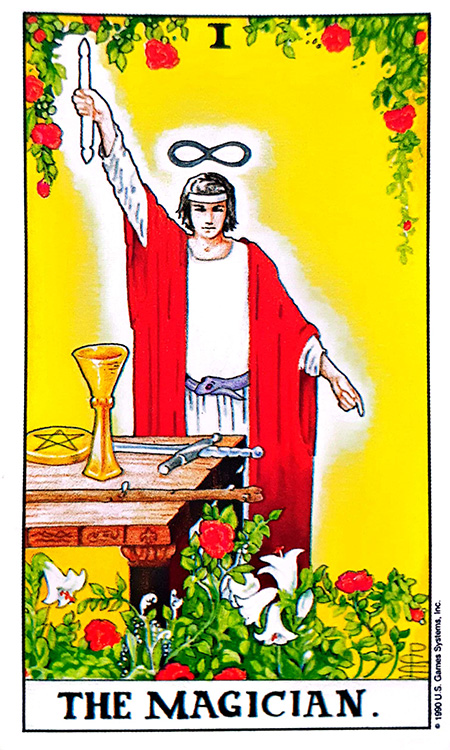 1. 마법사THE MAGICIAN | 능력 · 창조 · 실행 타고난 자질과 능력이 있으며, 시작할 수 있는 모든 조건을 갖추고 있다. |
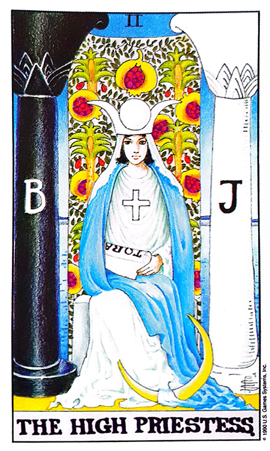 2. 여사제THE HIGHPRIESTESS | 직관 · 신중함 · 결단 생각을 깊게 하되, 직관적으로 결단을 내릴 필요가 있다. |
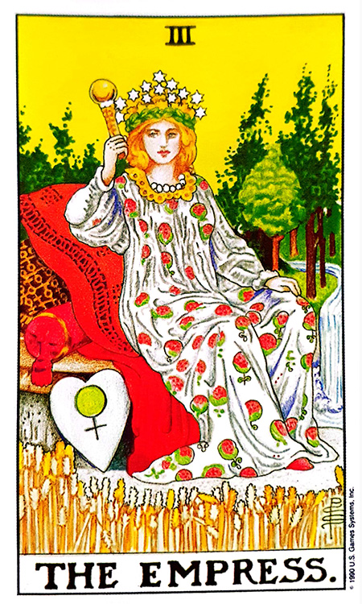 3. 여황제THE EMPRESS | 풍요 · 아름다움 · 모성 물질적인 풍요로움과 아름다움, 어머니의 모습을 나타낸다. |
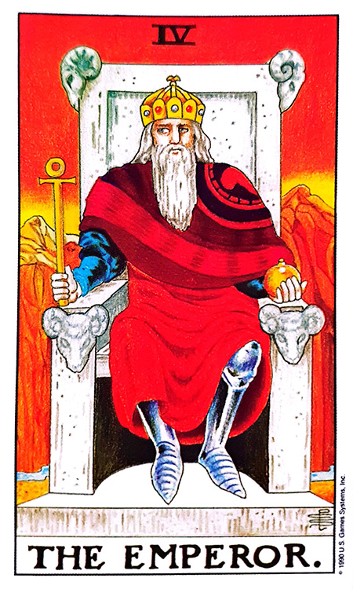 4. 황제THE EMPEROR | 권위 · 책임 · 의지 강인한 의지로 현실에 충실하되, 다른 사람과 조화를 이룰 필요가 있다. |
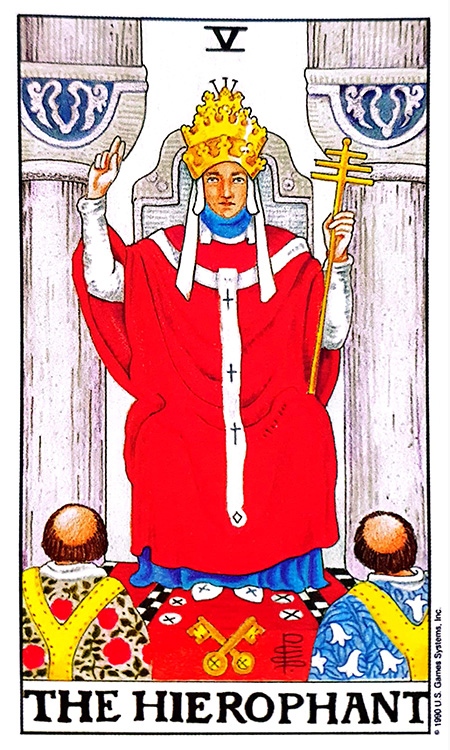 5. 교황THE HIEROPHANT | 조언 · 신뢰 · 전통 경험 많고 신뢰할 수 있는 사람에게 삶의 방향을 구할 수 있다. |
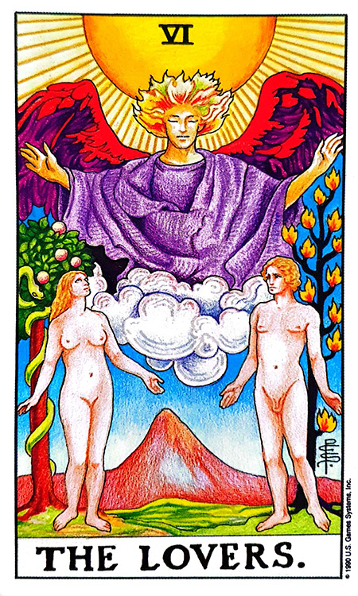 6. 연인THE LOVERS | 관계 · 이해 · 선택 서로의 다름을 이해하고, 관계 속 갈등과 유혹을 살펴볼 필요가 있다. |
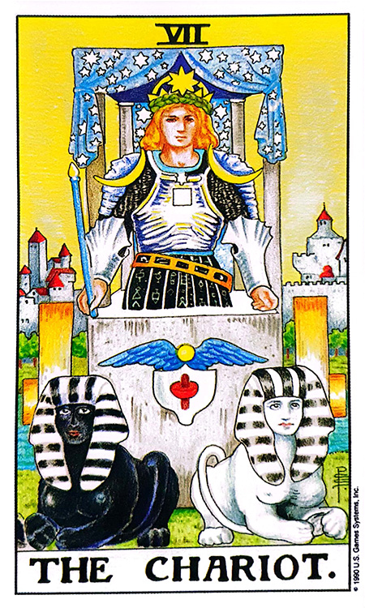 7. 전차THE CHARIOT | 추진력 · 갈등 조율 · 협력 내면의 갈등을 해소하고, 주위 사람들과 함께 호흡해야 한다. |
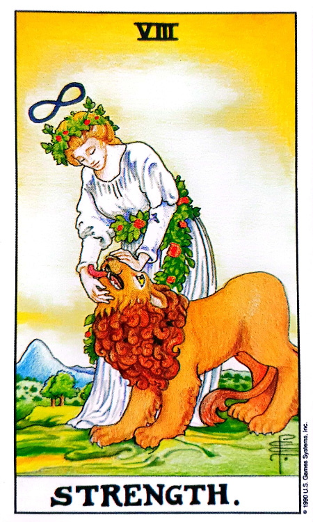 8. 힘STRENGTH | 용기 · 자신감 · 부드러운 힘 채찍 없이 맨손으로 사자를 길들이듯, 용기와 자신감으로 어려움을 하나씩 극복할 때다. |
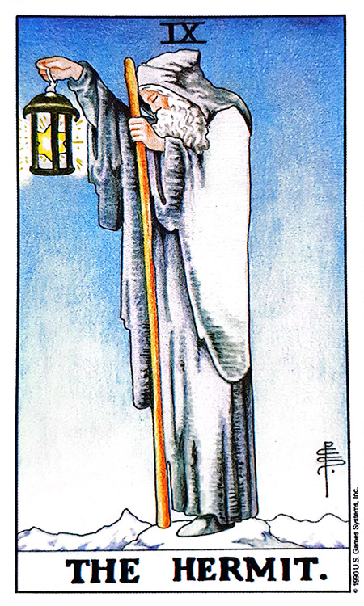 9. 은둔자THE HERMIT | 성찰 · 탐구 · 지혜 내면을 돌아보고, 중요한 문제부터 하나씩 해결할 필요가 있다. |
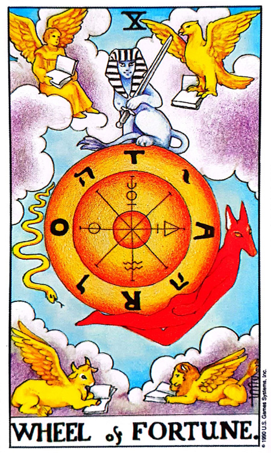 10. 운명의 수레바퀴WHEEL of FORTUNE | 변화 · 기회 · 순환 현재의 상황을 냉정하게 살피고, 다가오는 기회와 변화에 대비할 필요가 있다. |
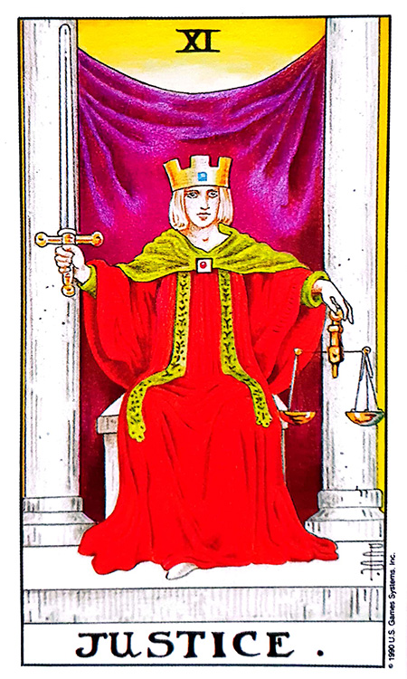 11. 정의JUSTICE | 이성 · 공정 · 판단 감정보다는 이성적으로 냉정하게 판단할 필요가 있다. |
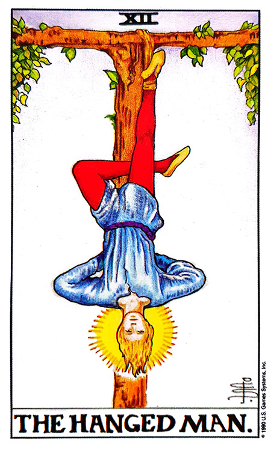 12. 매달린 남자THE HANGED MAN | 기다림 · 준비 · 관점 전환 지금은 무리해서 움직이기보다, 미래를 준비하며 기다리는 지혜가 필요하다. |
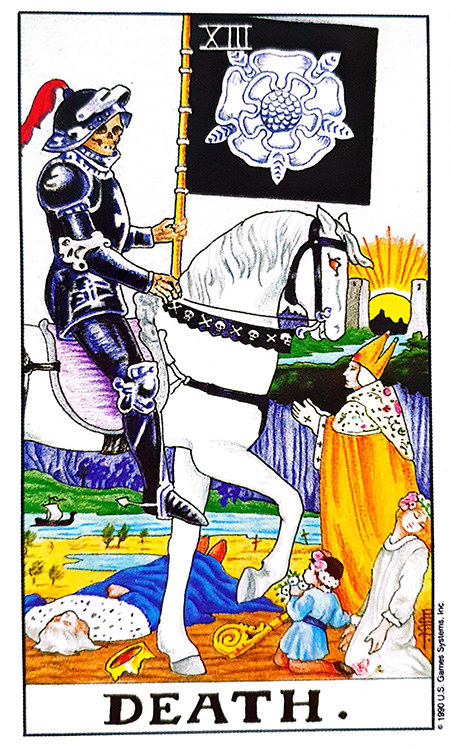 13. 죽음DEATH | 끝맺음 · 변화 · 새 출발 끝을 받아들이고, 더 나은 미래를 위한 새로운 시작을 준비할 필요가 있다. |
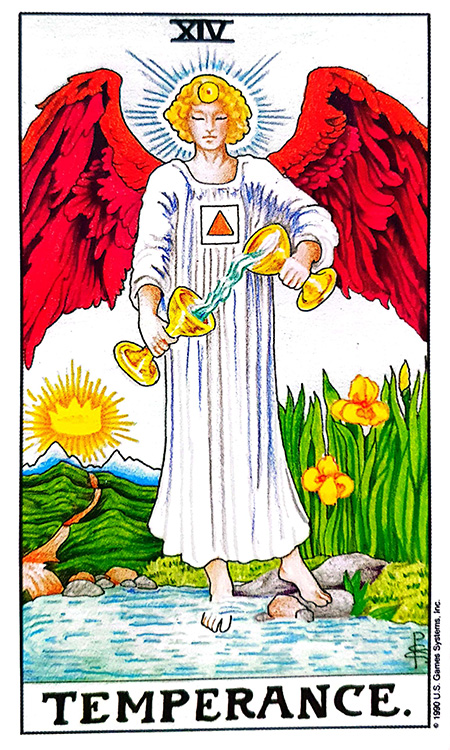 14. 절제TEMPERANCE | 균형 · 조화 · 유연함 무조건 양보하기보다, 유연하게 절제하며 조화를 이룰 필요가 있다. |
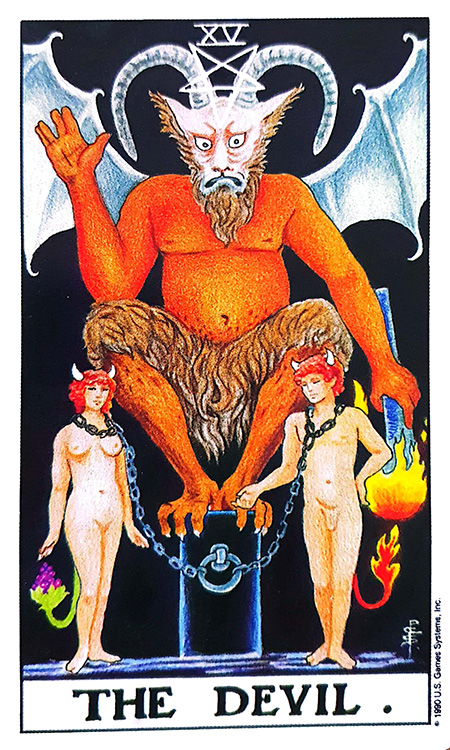 15. 악마THE DEVIL | 유혹 · 집착 · 속박 달콤한 유혹을 경계하고, 강한 의지로 집착과 속박에서 벗어날 필요가 있다. |
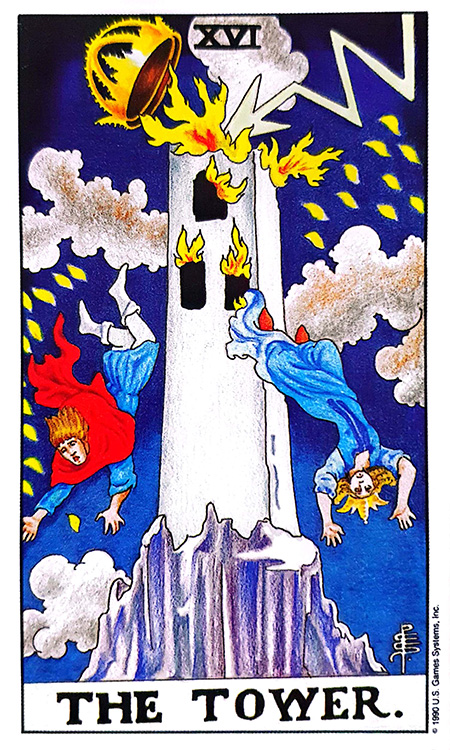 16. 탑THE TOWER | 갑작스러운 변화 · 붕괴 · 재정비 나의 의지와 상관없는 변화에 대비하고, 욕심을 버리고 차근차근 나아갈 필요가 있다. |
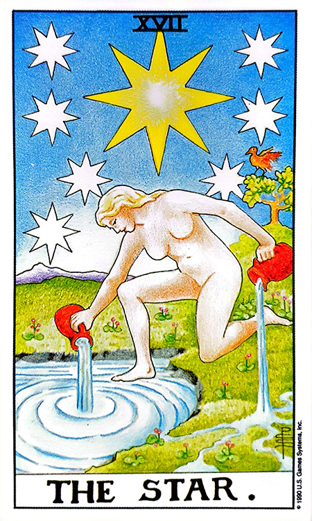 17. 별THE STAR | 희망 · 꿈 · 꾸준한 노력 꿈과 희망을 품고 끊임없이 노력하되, 현실적인 실현 가능성을 함께 따져볼 필요가 있다. |
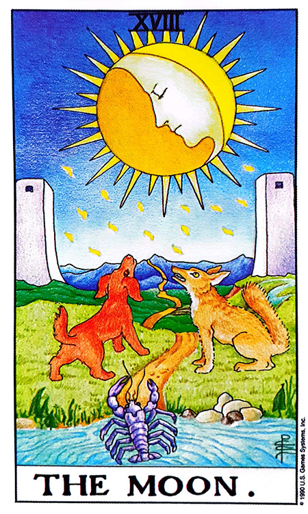 18. 달THE MOON | 불안 · 혼란 · 숨겨진 진실 막연한 불안과 두려움보다 현실적인 해결이 필요하고, 사기나 배신을 경계해야 하는 시기다. |
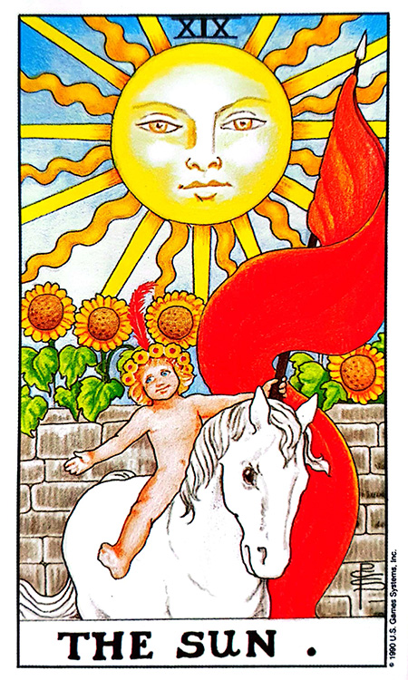 19. 태양THE SUN | 활력 · 기쁨 · 자신감 가장 긍정적인 에너지의 카드이나, 지나친 자만과 과시는 경계해야 한다. |
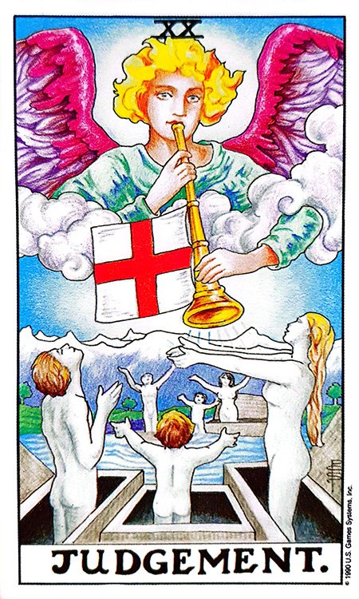 20. 심판JUDGEMENT | 좋은 소식 · 보상 · 재기 기다림 끝에 좋은 소식이 오고, 노력의 결실이 한꺼번에 돌아오는 시기다. |
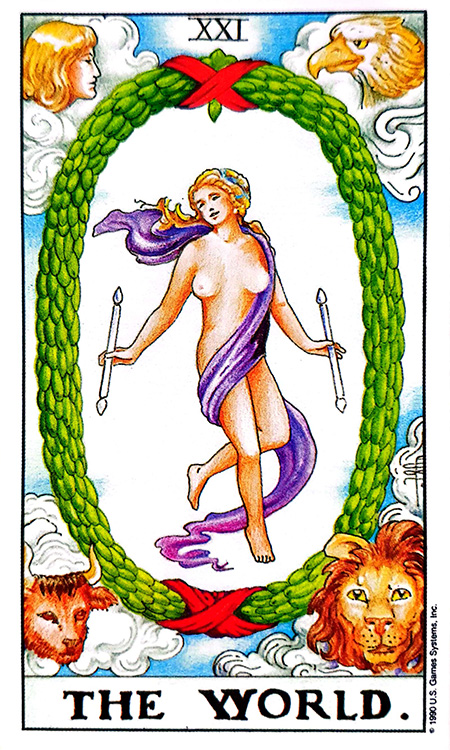 21. 세계THE WORLD | 완성 · 성취 · 다음 단계 그 동안의 노력이 결실을 이루지만, 안주하지 말고 한계의 틀을 깨고 더 큰 세상으로 나아갈 때다. |
완드 · 불 14장
열정과 행동, 일의 추진력
| 카드 | 핵심 키워드 · 간단 해석 |
|---|---|
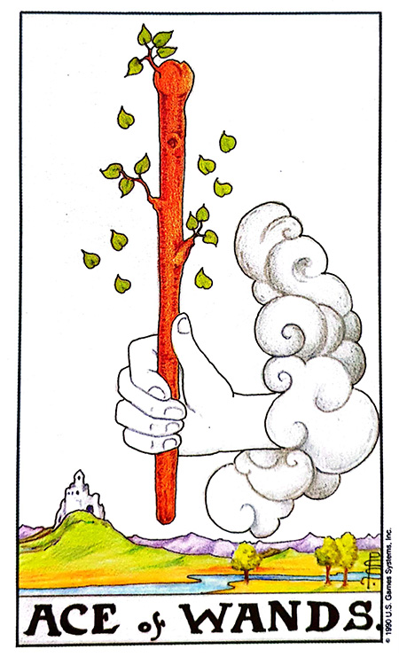 완드 에이스ACE OF WANDS | 열정 · 창조 · 출발 열정과 의욕으로 새로운 일이나 관계를 시작합니다. 뜨거운 마음을 이어 갈 계획이 필요합니다. |
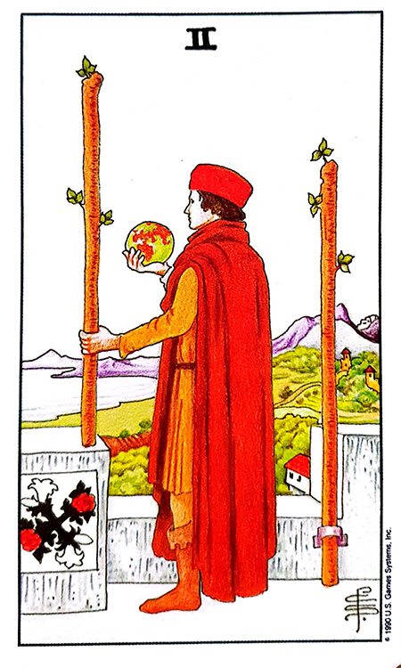 완드 2TWO OF WANDS | 야망 · 갈등 · 구상 사업 확장과 새로운 도전을 구상합니다. 관심이 일에 쏠려 관계와의 균형을 고민할 수 있습니다. |
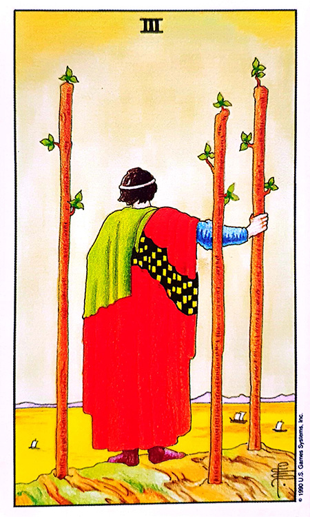 완드 3THREE OF WANDS | 성장 · 확장 · 교역 일이 진척되며 더 넓은 성장과 확장을 바라봅니다. 높은 목표만큼 현실적인 준비가 필요합니다. |
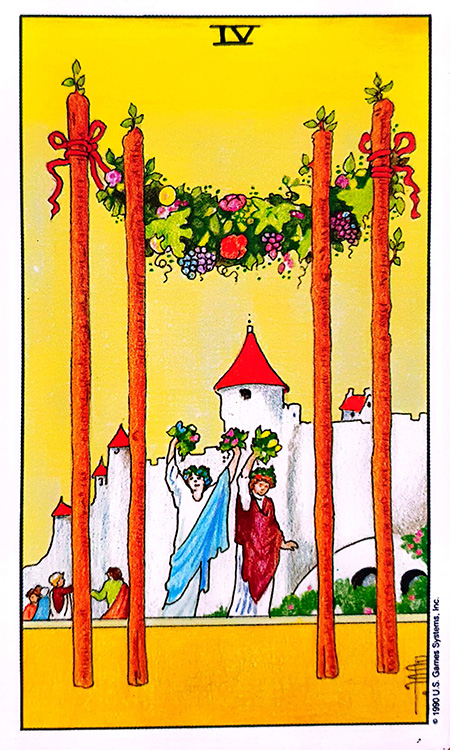 완드 4FOUR OF WANDS | 축복 · 결혼 · 결실 추진하던 일이 좋은 결실을 맺고 축하할 일이 생깁니다. 결혼·이사·화목한 관계를 뜻합니다. |
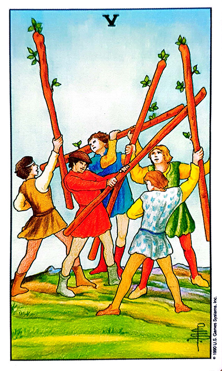 완드 5FIVE OF WANDS | 경쟁 · 다툼 · 갈등 경쟁과 분쟁, 마음속 갈등이 있는 상태입니다. 자존심보다 문제 해결에 집중합니다. |
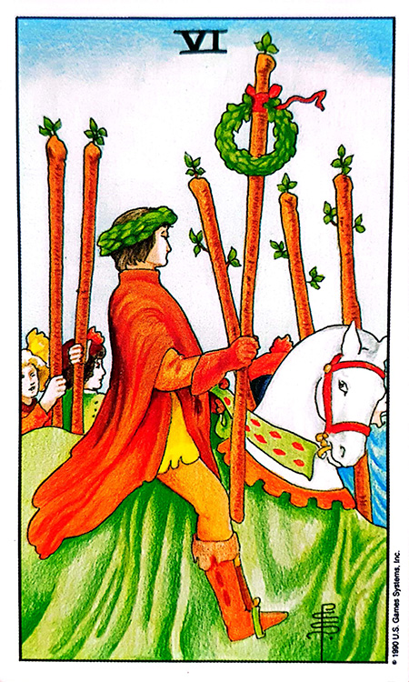 완드 6SIX OF WANDS | 승리 · 인정 · 성과 경쟁에서 이기거나 바라던 결과를 얻습니다. 주변의 도움을 기억하고 다음 단계를 준비합니다. |
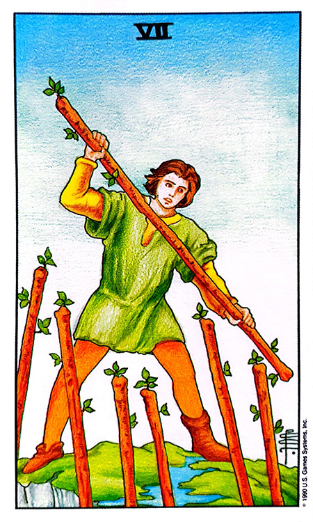 완드 7SEVEN OF WANDS | 방어 · 유리한 경쟁 · 수성 유리한 위치에서 내 것을 지키는 흐름입니다. 남은 문제를 대화로 풀며 끝까지 노력합니다. |
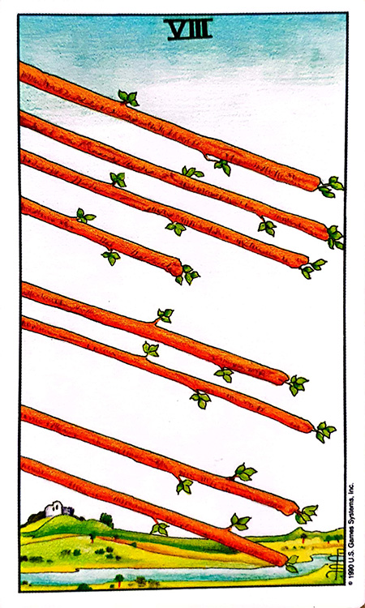 완드 8EIGHT OF WANDS | 빠른 진행 · 결과 · 완성 일이 빠르게 진행되고 결과가 드러나는 시기입니다. 바쁜 흐름 속에서 마무리에 집중합니다. |
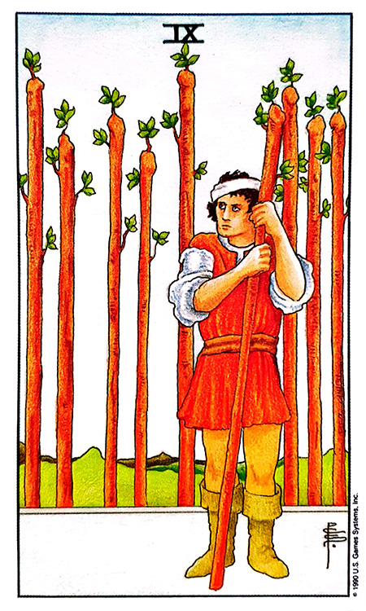 완드 9NINE OF WANDS | 피로 · 인내 · 버팀 심신이 지쳤지만 의지로 버티는 상태입니다. 계속 지킬 가치가 있는지 현실적으로 살핍니다. |
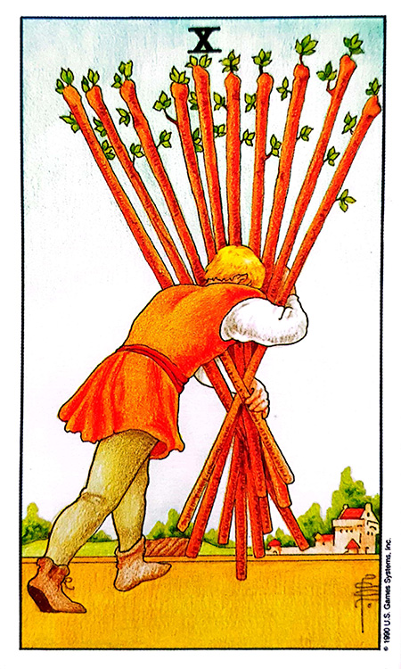 완드 10TEN OF WANDS | 과중한 책임 · 인내 · 보상 과도한 책임을 혼자 짊어지고 있습니다. 짐을 나누고 마지막 고비를 넘기면 보상을 기대할 수 있습니다. |
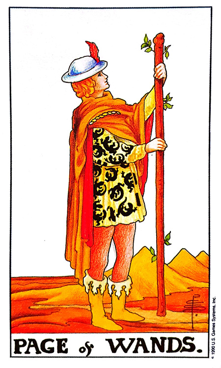 완드 시종PAGE OF WANDS | 새 시작 · 호기심 · 미숙함 호기심과 열정으로 새 도전을 시작하는 사람입니다. 의욕은 높지만 경험과 꾸준함을 더 쌓아야 합니다. |
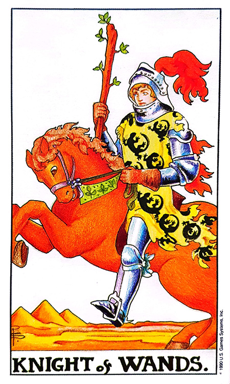 완드 기사KNIGHT OF WANDS | 모험 · 행동력 · 성급함 마음이 뜨거워지면 바로 행동하는 도전자입니다. 성급한 출발과 쉽게 식는 열정을 조절합니다. |
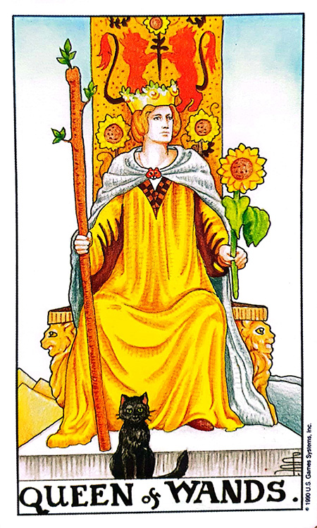 완드 여왕QUEEN OF WANDS | 열정 · 적극성 · 신뢰 적극적이고 믿음직하며 성공을 추구하는 사람입니다. 다른 의견을 수용하지만 더 좋은 조건에 마음이 바뀔 수 있습니다. |
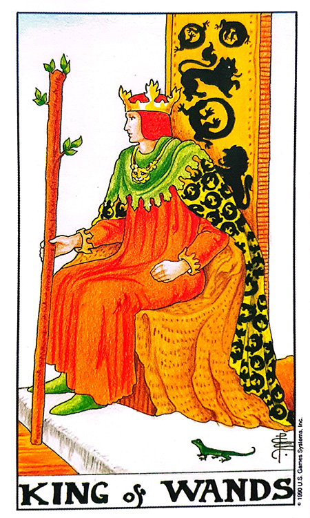 완드 왕KING OF WANDS | 성취 · 신념 · 리더십 강한 신념과 추진력으로 성취를 이끄는 사람입니다. 초심을 지키되 고집을 내려놓고 소통합니다. |
컵 · 물 14장
감정과 사랑, 관계의 흐름
| 카드 | 핵심 키워드 · 간단 해석 |
|---|---|
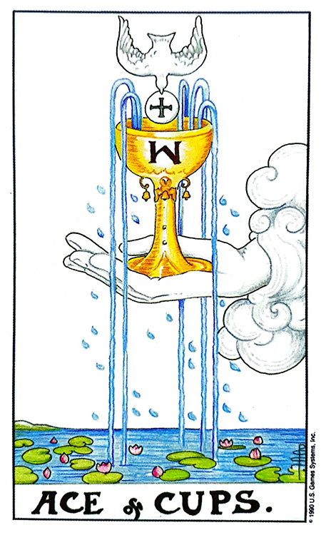 컵 에이스ACE OF CUPS | 새 감정 · 치유 · 기쁨 마음의 상처가 치유되고 새로운 감정이 시작됩니다. 화해와 새로운 사랑, 기쁨의 흐름입니다. |
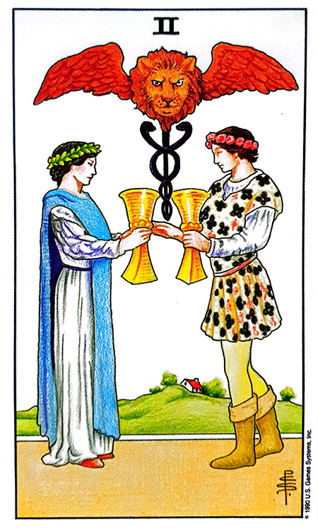 컵 2TWO OF CUPS | 연인 · 교류 · 조화 서로 마음과 대화가 통하는 관계의 시작입니다. 사랑뿐 아니라 동업·협력·정보 교류에도 좋습니다. |
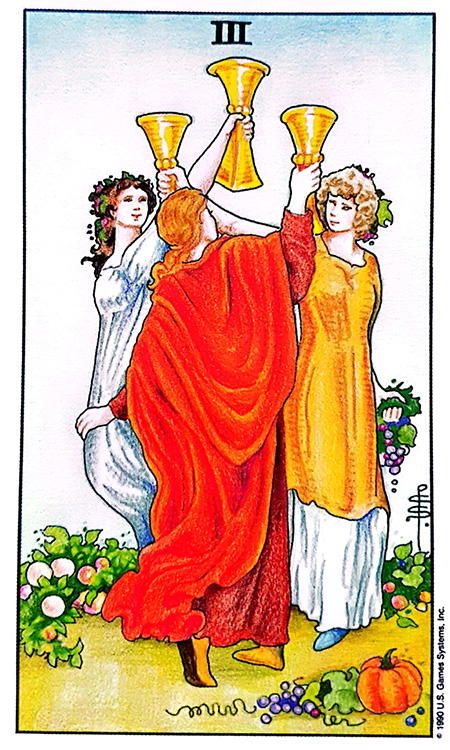 컵 3THREE OF CUPS | 우정 · 축하 · 협업 우정과 협업 속에서 기쁨과 성취를 나눕니다. 친구를 통한 인연이나 축하할 만남을 뜻합니다. |
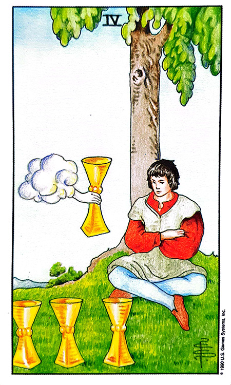 컵 4FOUR OF CUPS | 무관심 · 권태 · 새 제안 기존 관심사에 갇혀 새로운 제안을 놓치는 상태입니다. 주변의 기회와 사람을 다시 살펴봅니다. |
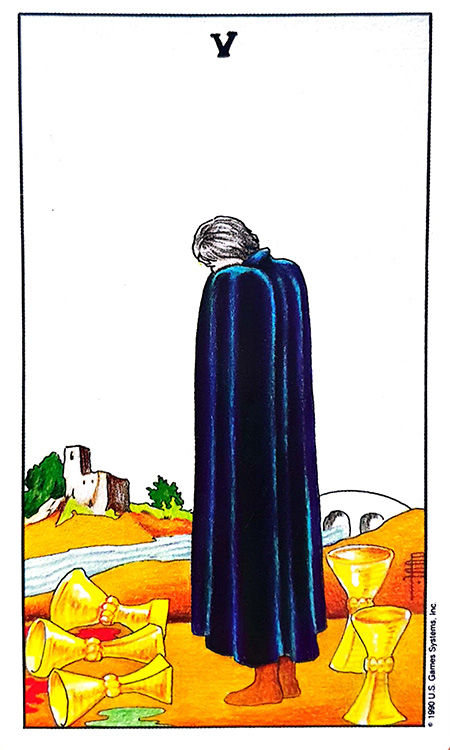 컵 5FIVE OF CUPS | 후회 · 미련 · 과거 집착 지나간 일에 대한 미련과 후회에 머물러 있습니다. 남아 있는 가능성을 보려면 과거의 집착을 내려놓습니다. |
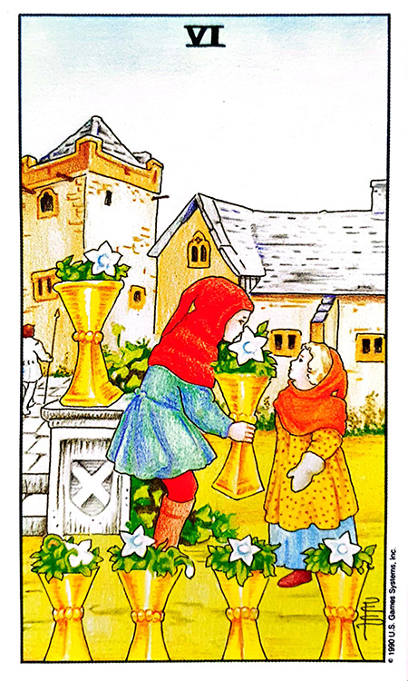 컵 6SIX OF CUPS | 추억 · 순수 · 옛 인연 과거의 인연과 추억, 순수한 도움을 뜻합니다. 재회나 처음의 마음으로 돌아가고 싶은 바람이 있습니다. |
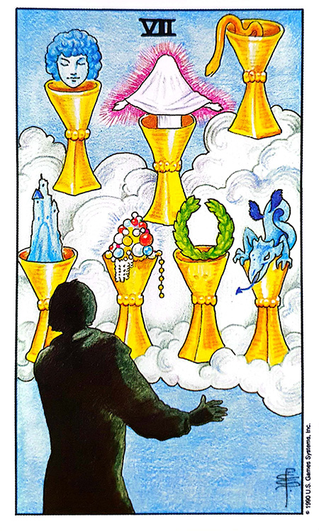 컵 7SEVEN OF CUPS | 상상 · 호기심 · 환상 꿈과 선택지는 많지만 실체나 실행이 부족합니다. 상상과 현실을 구분하고 가능한 것부터 선택합니다. |
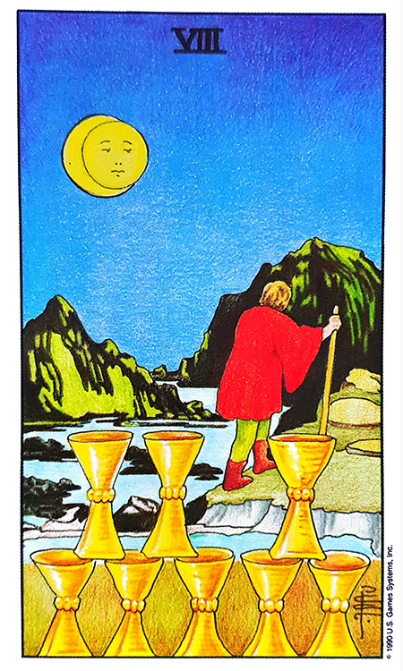 컵 8EIGHT OF CUPS | 변화 · 이동 · 미련 정리 환경이나 마음이 변해 익숙한 곳을 떠납니다. 미련을 내려놓고 이동·이직·새 출발을 준비합니다. |
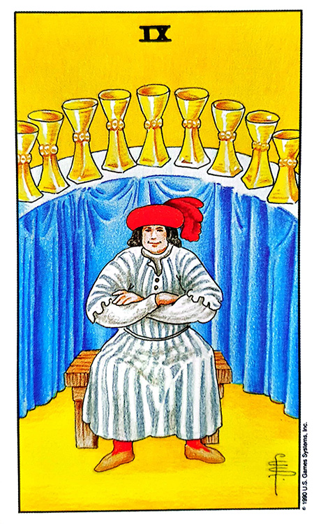 컵 9NINE OF CUPS | 만족 · 여유 · 좋은 결과 결과의 크기와 관계없이 현재에 만족하는 상태입니다. 편안하고 안정적인 만남과 좋은 결과를 뜻합니다. |
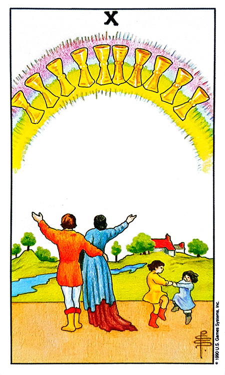 컵 10TEN OF CUPS | 가족 · 결혼 · 행복 노력의 보상과 행복한 가정, 관계의 회복을 뜻합니다. 결혼과 가족의 축복처럼 안정된 흐름입니다. |
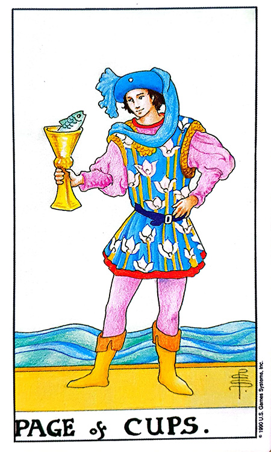 컵 시종PAGE OF CUPS | 순수 · 예술성 · 미숙함 여리고 순수한 감성으로 새로운 경험을 시작합니다. 예술적 영감은 풍부하지만 미숙함과 집착을 살핍니다. |
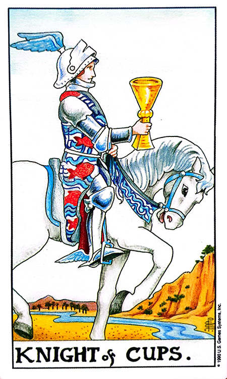 컵 기사KNIGHT OF CUPS | 초대 · 제안 · 청혼 초대·제안·청혼처럼 마음을 전하는 기회가 옵니다. 부드럽고 신중하게 다가가며 관계가 서서히 좋아집니다. |
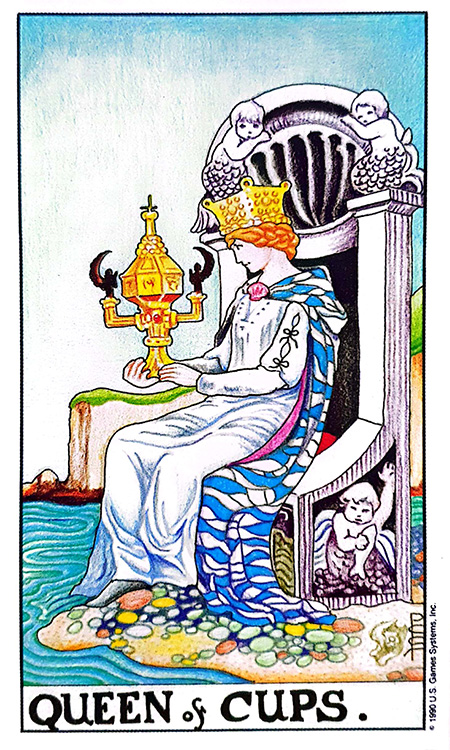 컵 여왕QUEEN OF CUPS | 모성애 · 따뜻함 · 헌신 따뜻한 감성과 모성애로 소중한 사람을 보살핍니다. 감정을 숨기거나 지나치게 희생하지 않도록 살핍니다. |
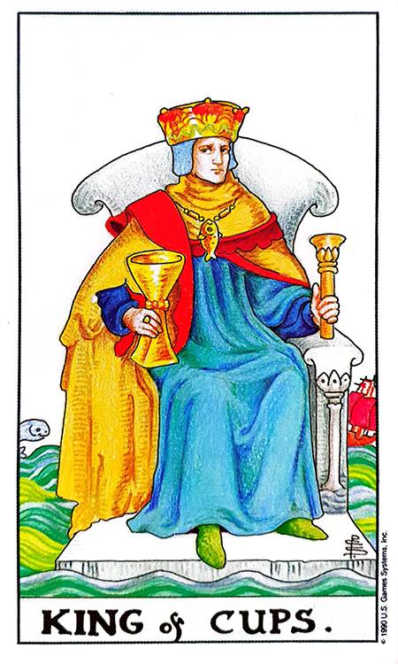 컵 왕KING OF CUPS | 감정 통제 · 창의성 · 자기 세계 깊은 감성과 창의력을 지닌 사람입니다. 자기 감정과 이상에 빠져 현실 판단이나 소통을 놓치지 않도록 합니다. |
소드 · 공기 14장
생각과 판단, 갈등과 선택
| 카드 | 핵심 키워드 · 간단 해석 |
|---|---|
| 소드 에이스ACE OF SWORDS | 결단 · 근심 · 자존심 신경 쓰이는 일로 중요한 선택을 앞두고 있습니다. 자존심보다 현실을 기준으로 결단합니다. |
| 소드 2TWO OF SWORDS | 갈림길 · 두려움 · 갈등 두려움과 갈등으로 결정을 미루는 상태입니다. 상황을 분명히 보고 더 늦기 전에 선택합니다. |
| 소드 3THREE OF SWORDS | 상처 · 상실 · 실망 기대했던 일이나 관계에서 실망과 상처를 받습니다. 지나간 생각을 내려놓고 마음을 추스를 시간이 필요합니다. |
| 소드 4FOUR OF SWORDS | 중단 · 휴식 · 회복 진행하던 일이 멈추고 휴식과 회복이 필요한 시기입니다. 억지로 해결하려 하기보다 쉬어 갑니다. |
| 소드 5FIVE OF SWORDS | 이기고도 아쉬움 · 상처 · 정리 얻는 것이 있어도 손실과 아쉬움이 남습니다. 다툼과 상처를 정리하고 소모적인 관계에서 벗어납니다. |
| 소드 6SIX OF SWORDS | 이동 · 생각의 변화 · 회복 좋지 않은 환경이나 생각에서 벗어나 이동합니다. 과거의 집착을 내려놓고 더 나은 방향으로 나아갑니다. |
| 소드 7SEVEN OF SWORDS | 전략 · 숨은 의도 · 욕심 정면 대응보다 우회와 전략이 필요한 상황입니다. 지나친 욕심과 숨은 의도, 속임수를 경계합니다. |
| 소드 8EIGHT OF SWORDS | 제약 · 불안 · 인내 제한된 상황에서 불안하고 움직이기 어려운 상태입니다. 무리한 돌파보다 참고 기다리며 상황을 살핍니다. |
| 소드 9NINE OF SWORDS | 심각한 고민 · 걱정 · 스트레스 오래된 고민과 스트레스로 생각이 복잡한 상태입니다. 문제를 나누어 하나씩 정리하고 풀어 갑니다. |
| 소드 10TEN OF SWORDS | 끝맺음 · 포기 · 고통의 끝 힘겹게 버티던 일이 끝나거나 포기해야 할 때입니다. 내려놓을 것은 정리하고 회복과 다음을 준비합니다. |
| 소드 시종PAGE OF SWORDS | 경계심 · 준비 부족 · 흔들림 생각과 판단이 아직 정리되지 않은 사람입니다. 높은 이상에 비해 준비가 부족하므로 신중하게 확인합니다. |
| 소드 기사KNIGHT OF SWORDS | 조급함 · 돌진 · 충동 빠르게 판단하고 돌진하려는 기세가 강합니다. 조급함과 준비 부족을 점검하고 끝까지 갈 계획을 세웁니다. |
| 소드 여왕QUEEN OF SWORDS | 전문성 · 냉정 · 결단 냉철한 판단과 확고한 결단을 지닌 사람입니다. 전문성을 발휘하되 단호함이 관계의 벽이 되지 않게 합니다. |
| 소드 왕KING OF SWORDS | 논리 · 통찰 · 엄격함 논리와 통찰력으로 판단하려는 사람입니다. 아직 생각이 바뀔 여지가 있으므로 독단과 성급한 결정을 경계합니다. |
펜타클 · 흙 14장
돈과 일, 현실과 안정
| 카드 | 핵심 키워드 · 간단 해석 |
|---|---|
| 펜타클 에이스ACE OF PENTACLES | 일의 시작 · 목돈 · 안정 새로운 일이나 사업이 자리를 잡기 시작합니다. 목돈의 이동과 경제적 안정, 노력의 보상을 뜻합니다. |
| 펜타클 2TWO OF PENTACLES | 저울질 · 투잡 · 불안정 두 가지 선택이나 일을 저울질하며 불안정하게 버팁니다. 욕심을 줄이고 집중할 대상을 정합니다. |
| 펜타클 3THREE OF PENTACLES | 협력 · 조율 · 미완성 협력과 조율로 완성을 향해 가는 과정입니다. 주변의 조언을 듣고 조금 더 꾸준히 노력합니다. |
| 펜타클 4FOUR OF PENTACLES | 소유 · 절약 · 집착 내 것을 지키려는 마음과 손실에 대한 불안이 큽니다. 돈과 소유에 대한 집착, 관계의 배려를 살핍니다. |
| 펜타클 5FIVE OF PENTACLES | 결핍 · 소외 · 어려움 경제적 어려움과 소외감으로 힘든 상태입니다. 잠시 쉬며 회복하고 주변의 도움을 찾아봅니다. |
| 펜타클 6SIX OF PENTACLES | 공정 · 주고받음 · 보상 베푼 만큼, 노력한 만큼 보상이 돌아옵니다. 도움을 주고받는 공정한 관계를 뜻합니다. |
| 펜타클 7SEVEN OF PENTACLES | 불만족 · 선택 · 확장 고민 기존 성과에 만족하지 못해 변화나 확장을 고민합니다. 계속할지 바꿀지 현실적으로 점검합니다. |
| 펜타클 8EIGHT OF PENTACLES | 성실 · 숙련 · 꾸준함 성실한 노력이 실력과 성과로 차곡차곡 쌓입니다. 변화보다 지금 하던 일에 충실할 때입니다. |
| 펜타클 9NINE OF PENTACLES | 독립 · 풍요 · 자기만족 물질적인 여유와 혼자만의 만족을 누립니다. 타인보다 자신의 생활과 독립성을 소중히 여깁니다. |
| 펜타클 10TEN OF PENTACLES | 비교 · 부러움 · 관계의 아쉬움 다른 사람의 풍요와 행복을 부러워하는 마음입니다. 비교로 복잡해진 생각과 현재 관계의 아쉬움을 살핍니다. |
| 펜타클 시종PAGE OF PENTACLES | 배움 · 신중함 · 작은 시작 신중하게 배우고 작은 규모로 시작하는 사람입니다. 현실적인 준비와 작은 이익을 쌓으며 안정을 찾습니다. |
| 펜타클 기사KNIGHT OF PENTACLES | 성실 · 준비 · 안정 서두르지 않고 꼼꼼하게 준비하는 실천가입니다. 안정적인 일상과 계획을 꾸준히 실행합니다. |
| 펜타클 여왕QUEEN OF PENTACLES | 관리 · 실용 · 가정 현실과 가정을 꼼꼼하게 돌보고 관리하는 사람입니다. 돈을 지키고 생활을 안정시키는 데 힘을 씁니다. |
| 펜타클 왕KING OF PENTACLES | 재력 · 사업 감각 · 현실성 재력과 사업 감각, 꾸준함을 갖춘 현실적인 사람입니다. 안정을 중시하지만 돈 때문에 바람과 관계를 억누를 수 있습니다. |